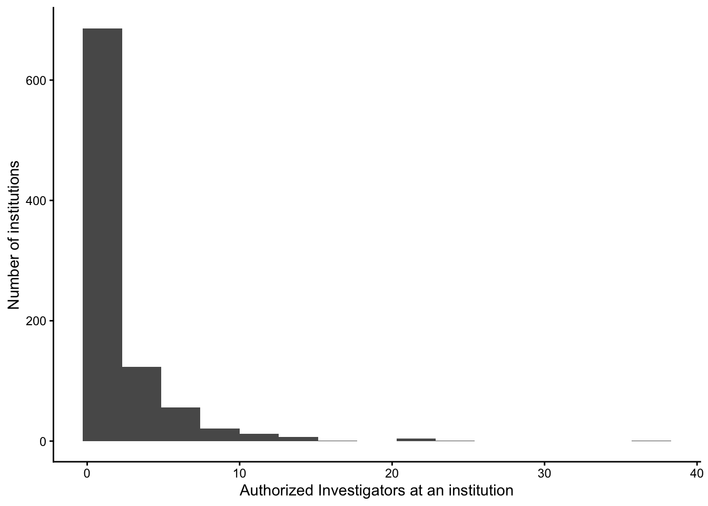
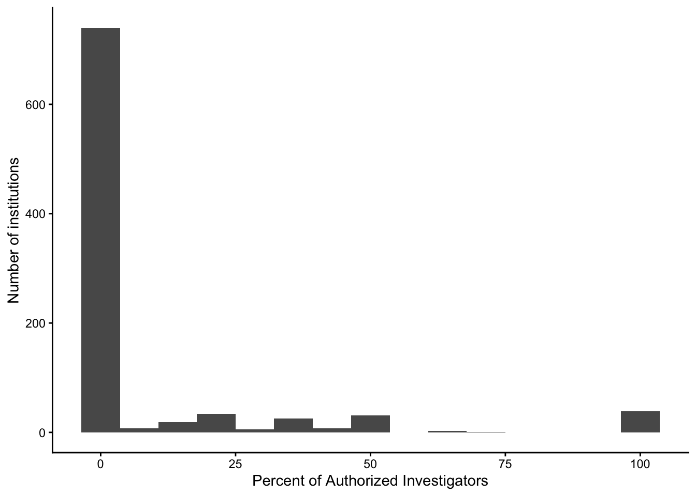
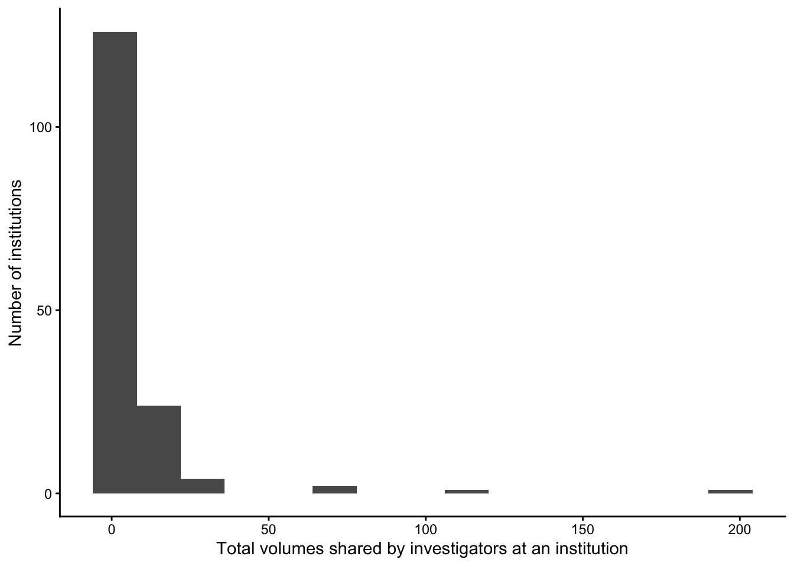

| name | institution_url |
|---|---|
| Hec Montreal | https://www.hec.ca/en |
| University of the West of | https://www.uwe.ac.uk/ |
| Suny Downstate Health Sci | https://www.downstate.edu/index.html |
| University of Rhode Islan | https://www.uri.edu/ |
| Icahn School of Medicine | https://icahn.mssm.edu/ |
| University of Technology | https://www.utn.de/en/ |
| Czech Technical Universit | https://www.cvut.cz/en |
| Hampden-sydney College | https://www.hsc.edu/ |
| University of Yamanashi | https://www.yamanashi.ac.jp/ |
| University of Nebraska Me | https://www.unmc.edu/ |
Institutions
About
This page provides information about Databrary’s institutional partners.
For more information about institutional roles and responsibilities, see the Databrary Guide.
Summary
Databrary has n=909 active institutional partners.
Recent additions
Full list
Here is a full list in alphabetical order.
| name | institution_url |
|---|---|
| Aalborg University | https://www.en.aau.dk/ |
| Aalto University | http://www.aalto.fi/en/ |
| Acadia University | https://www2.acadiau.ca/ |
| Adam Mickiewicz Universit | http://international.amu.edu.pl/ |
| Adelphi University | http://www.adelphi.edu/ |
| Agency for Science, Techn | https://www.a-star.edu.sg/ |
| Aix-Marseille University | https://www.univ-amu.fr/en |
| Al-Farabi Kazakh National | https://www.kaznu.kz/en/ |
| Albert Einstein College o | http://www.einstein.yu.edu/ |
| Albion College | https://www.albion.edu/ |
| Albright College | https://www.albright.edu/ |
| Alexandru Ioan Cuza Unive | http://www.uaic.ro/en/ |
| Alverno College | https://www.alverno.edu/ |
| American University | https://www.american.edu/ |
| American University of Be | https://www.aub.edu.lb/ |
| Amherst College | https://www.amherst.edu/ |
| Amrita Vishwa Vidyapeetha | https://www.amrita.edu/ |
| Amsterdam UMC | https://www.amsterdamumc.org/nl.htm |
| Amsterdam University Coll | http://www.auc.nl/ |
| Anglia Ruskin University | https://aru.ac.uk/ |
| Anna Maria College | https://www.annamaria.edu/ |
| Arizona State University | https://www.asu.edu/ |
| Ashkelon Academic College | https://www.aac.ac.il/en/ |
| Ashland University | https://www.ashland.edu/ |
| Association Italian Teach | http://www.feldenkrais.it/ |
| Assumption College | https://www.assumption.edu/ |
| Athens State University | https://www.athens.edu/ |
| Auburn University | https://www.auburn.edu/ |
| Augsburg University | http://www.augsburg.edu/ |
| Augustana College | https://www.augustana.edu/ |
| Augustana University | https://www.augie.edu/ |
| Australian Catholic Unive | http://www.acu.edu.au/ |
| Australian College of App | https://www.acap.edu.au/ |
| Australian National Unive | http://www.anu.edu.au/ |
| Avila University | https://www.avila.edu/ |
| Avinashilingam University | https://avinuty.ac.in/ |
| Babes-Bolyai University | http://www.ubbcluj.ro/en/ |
| Banja Luka University | http://www.unibl.org/en/ |
| Bar-Ilan University | https://www1.biu.ac.il/indexE.php |
| Bard College | http://www.bard.edu/ |
| Barnard College, Columbia | https://barnard.edu/ |
| Baruch College, CUNY | http://www.baruch.cuny.edu/ |
| Bates College | https://www.bates.edu/ |
| Baylor College of Medicin | https://www.bcm.edu/ |
| Baylor University | https://www.baylor.edu/ |
| Beijing Normal University | https://english.bnu.edu.cn/ |
| Beijing Normal University | https://english.bnuzh.edu.cn/ |
| Belmont University | http://www.belmont.edu/ |
| Ben-Gurion University of | http://in.bgu.ac.il/en |
| Bethel College | https://www.bethelks.edu/ |
| Bielefeld University | https://www.uni-bielefeld.de/(en)/ |
| Bilkent University | http://w3.bilkent.edu.tr/bilkent/ |
| Binghamton University | https://www.binghamton.edu/ |
| Birkbeck, University of L | http://www.bbk.ac.uk/ |
| Birmingham-Southern Colle | https://www.bsc.edu/index.html |
| Bogazici University | http://www.boun.edu.tr/en_US |
| Borough of Manhattan Comm | https://www.bmcc.cuny.edu/ |
| Boston Children's Hospita | http://www.childrenshospital.org/ |
| Boston College | https://www.bc.edu/ |
| Boston Medical Center | https://www.bmc.org/ |
| Boston University | https://www.bu.edu/ |
| Bournemouth University | https://www.bournemouth.ac.uk/ |
| Boys Town Research Hospti | https://www.boystownhospital.org/ |
| Bradley University | https://www.bradley.edu/ |
| Brevard College | https://brevard.edu/ |
| Brigham Young University | https://www.byu.edu/ |
| Brigham Young University, | https://www.byui.edu/ |
| Brock University | https://brocku.ca/ |
| Brooklyn College, CUNY | http://www.brooklyn.cuny.edu/web/home.php |
| Brown University | https://www.brown.edu/ |
| Brunel University London | https://www.brunel.ac.uk/ |
| Bucknell University | http://www.bucknell.edu/ |
| Buffalo State University | https://suny.buffalostate.edu/ |
| Bundeswehr University Mun | https://www.unibw.de/home |
| Butler University | https://www.butler.edu/ |
| California Institute of I | https://www.ciis.edu/ |
| California Institute of T | https://www.caltech.edu/ |
| California Lutheran Unive | https://www.callutheran.edu/ |
| California Polytechnic St | https://www.calpoly.edu/ |
| California State Polytech | http://www.cpp.edu/ |
| California State Universi | https://www.csuci.edu/ |
| California State Universi | https://www.csudh.edu/ |
| California State Universi | https://www.csufresno.edu/ |
| California State Universi | https://www.fullerton.edu/ |
| California State Universi | http://www.csulb.edu/ |
| California State Universi | https://www.calstatela.edu/ |
| California State Universi | https://www.csun.edu/ |
| California State Universi | https://www.csus.edu/ |
| California State Universi | https://www.csusb.edu/ |
| California State Universi | https://www.csustan.edu/ |
| Canisius College | https://www.canisius.edu/ |
| Cardiff University | https://www.cardiff.ac.uk/ |
| Carleton University | http://carleton.ca/ |
| Carlos Albizu University, | http://www.albizu.edu/ |
| Carlow University | https://www.carlow.edu/ |
| Carnegie Mellon Universit | https://www.cmu.edu/ |
| Carroll University | https://www.carrollu.edu/ |
| Carthage College | https://www.carthage.edu/ |
| Case Western Reserve Univ | https://case.edu/ |
| Catholic University of Po | http://www.porto.ucp.pt/ |
| Center for Medical Educat | https://www.cemic.edu.ar/ |
| Central European Universi | https://www.ceu.edu/ |
| Central Michigan Universi | https://www.cmich.edu |
| Central New Mexico Colleg | https://www.cnm.edu/ |
| Chapman University | https://www.chapman.edu/index.aspx |
| Charité - University Medi | https://www.charite.de/forschung/ |
| Chatham University | https://www.chatham.edu/ |
| Chiba University | https://www.chiba-u.ac.jp/e/ |
| Children's Hospital of Ph | http://www.chop.edu/ |
| Children’s Mercy Kansas C | https://www.childrensmercy.org/ |
| Chosun University | https://eng.chosun.ac.kr/ |
| Christopher Newport Unive | http://cnu.edu/ |
| Chukyo University | https://kenkyu-db.chukyo-u.ac.jp/ |
| Cincinnati Children’s Hos | https://www.cincinnatichildrens.org/ |
| City University of Hong K | https://www.cityu.edu.hk/en |
| City, University of Londo | https://www.city.ac.uk/ |
| Claremont Graduate Univer | https://www.cgu.edu/ |
| Clark University | http://www.clarku.edu/ |
| Clarkson University | https://www.clarkson.edu/ |
| Claude Bernard University | https://www.univ-lyon1.fr/en/home-759942.kjsp |
| Clemson University | http://www.clemson.edu/ |
| Cleveland State Universit | https://www.csuohio.edu/ |
| Cognition and Learning Re | https://cerca.labo.univ-poitiers.fr/en/research-centre-on-cognition-and-learning-2/ |
| Colby College | https://www.colby.edu/ |
| College of Southern Nevad | https://www.csn.edu/ |
| College of Staten Island, | https://www.csi.cuny.edu/ |
| College of William & Mary | https://www.wm.edu/ |
| College of the Holy Cross | https://www.holycross.edu/ |
| Colombian School of Engin | https://www.escuelaing.edu.co/es/ |
| Colorado College | https://www.coloradocollege.edu/ |
| Colorado State University | https://www.colostate.edu/ |
| Columbia University | https://www.columbia.edu/ |
| Columbus State University | https://www.columbusstate.edu/ |
| Concordia University | https://www.concordia.ca/ |
| Connecticut College | https://www.conncoll.edu/ |
| Copenhagen Business Schoo | https://www.cbs.dk/en |
| Cornell University | https://www.cornell.edu/ |
| Curtin University | http://www.curtin.edu.au/ |
| Czech Technical Universit | https://www.cvut.cz/en |
| D'annunzio University of | https://www.unich.it/ |
| Dalton State College | https://www.daltonstate.edu/ |
| Dartmouth College | https://home.dartmouth.edu/ |
| Davidson College | https://www.davidson.edu/ |
| DePaul University | https://www.depaul.edu |
| Deakin University | http://www.deakin.edu.au/ |
| Denison University | https://denison.edu/ |
| Dickinson College | https://www.dickinson.edu/ |
| Dominican College | https://www.dc.edu/ |
| Donders Institute | NA |
| Drew University | https://www.drew.edu/ |
| Drexel University | https://drexel.edu/ |
| Dublin City University | https://www.dcu.ie/ |
| Duke Kunshan University | https://dukekunshan.edu.cn/en |
| Duke University | https://www.duke.edu/ |
| Duke University, School o | https://medschool.duke.edu/ |
| Duquesne University | https://www.duq.edu/ |
| Earlham College | http://earlham.edu/ |
| East Carolina University | https://www.ecu.edu/ |
| East China Normal Univers | http://english.ecnu.edu.cn/ |
| East Tennessee State Univ | http://www.etsu.edu/ehome/ |
| Eastern Michigan Universi | http://www.emich.edu/ |
| Eckerd College | https://www.eckerd.edu/ |
| Edge Hill University | https://www.edgehill.ac.uk/ |
| Edogawa University | http://www.edogawa-u.ac.jp/en/ |
| Educational Testing Servi | https://www.ets.org/ |
| Elmira College | https://www.elmira.edu/ |
| Elon University | https://www.elon.edu/ |
| Emerson College | https://www.emerson.edu/ |
| Emirates College for Adva | http://www.ecae.ac.ae/ |
| Emory University | http://www.emory.edu/home/index.html |
| Endicott College | https://www.endicott.edu/ |
| Farmingdale State College | https://www.farmingdale.edu/ |
| Federal University Juiz d | https://www2.ufjf.br/ |
| Federal University of Ala | http://www.ufal.edu.br/ |
| Federal University of Min | https://ufmg.br/international-visitors |
| Federal University of Par | http://www.ufpb.br/ |
| Federal University of Par | http://www.ufpr.br/portalufpr/ |
| Federal University of Rio | http://www.ufrgs.br/english/home |
| Federal University of San | https://ufsc.br/ |
| Firat Universty | https://www.firat.edu.tr/en |
| Florida Atlantic Universi | https://www.fau.edu/ |
| Florida International Uni | https://www.fiu.edu/ |
| Florida State University | https://www.fsu.edu/ |
| Fordham University | https://www.fordham.edu/ |
| Frankfurt Institute for A | https://fias.institute/en/ |
| Franklin and Marshall Col | https://www.fandm.edu/ |
| Free University of Berlin | https://www.fu-berlin.de/en/index.html |
| Free University of Brusse | http://www.ulb.ac.be/ulb/presentation/uk.html |
| Fudan University | https://www.fudan.edu.cn/en/ |
| Fujita Health University | https://www.fujita-hu.ac.jp/en/ |
| Gallaudet University | https://my.gallaudet.edu/ |
| General Hospital of Mexic | http://www.hgm.salud.gob.mx/ |
| George Mason University | https://www2.gmu.edu/ |
| George Washington Univers | https://www.gwu.edu/ |
| Georgetown University | https://www.georgetown.edu/ |
| Georgia College & State U | http://www.gcsu.edu/ |
| Georgia Institute of Tech | https://www.gatech.edu/ |
| Georgia State University | http://www.gsu.edu/ |
| Gettysburg College | http://www.gettysburg.edu/ |
| Gifu University | https://www.gifu-u.ac.jp/en/ |
| Goethe University, Frankf | https://www.goethe-university-frankfurt.de/en |
| Gordon College | https://www.gordon.edu/ |
| Grand Valley State Univer | https://www.gvsu.edu/ |
| Grinnell College | https://www.grinnell.edu/ |
| Guilford College | https://www.guilford.edu/ |
| Gustave Eiffel University | https://www.univ-gustave-eiffel.fr/en/ |
| Gustavus Adolphus College | https://gustavus.edu/ |
| Hampden-sydney College | https://www.hsc.edu/ |
| Hampshire College | https://www.hampshire.edu/ |
| Hangzhou Normal Universit | http://english.hznu.edu.cn/ |
| Hanover College | https://www.hanover.edu/ |
| Hartwick College | https://www.hartwick.edu/ |
| Harvard Medical School | https://hms.harvard.edu/ |
| Harvard University | https://www.harvard.edu/ |
| Harvey Mudd College | https://www.hmc.edu/ |
| Hasselt University | https://www.uhasselt.be/en |
| Haverford College | https://www.haverford.edu/ |
| Hec Montreal | https://www.hec.ca/en |
| Heriot-watt University | https://www.hw.ac.uk/ |
| High Point University | http://www.highpoint.edu/ |
| Hiroshima University | https://www.hiroshima-u.ac.jp/en |
| Hofstra University | https://www.hofstra.edu/ |
| Hong Kong University of S | http://www.ust.hk/ |
| Hood College | https://www.hood.edu/ |
| Humboldt State University | https://www.humboldt.edu/ |
| Humboldt University of Be | https://www.hu-berlin.de/en/ |
| Hunter College, CUNY | http://www.hunter.cuny.edu/main/ |
| Hunter New England Health | http://www.hnehealth.nsw.gov.au/ |
| Huntington University | https://www.huntington.edu/ |
| ICESI University | https://www.icesi.edu.co/en/ |
| IE University | https://www.ie.edu/ |
| INSERM | http://english.inserm.fr/ |
| IRCCS Eugenio Medea | https://emedea.it/medea/it/ |
| IRCCS Stella Maris Founda | http://www.fsm.unipi.it/ |
| ISCTE - University Instit | https://www.iscte-iul.pt/ |
| Icahn School of Medicine | https://icahn.mssm.edu/ |
| Idaho State University | https://www.isu.edu/ |
| Illinois Institute of Tec | https://www.iit.edu/ |
| Illinois State University | https://illinoisstate.edu/ |
| Indian Institute of Techn | https://www.iitb.ac.in/ |
| Indiana University | https://www.indiana.edu/ |
| Indiana University, Purdu | https://www.iupuc.edu/ |
| Indiana University, Purdu | https://www.iupui.edu/ |
| Indiana University, South | https://www.iusb.edu/ |
| Indiana Wesleyan Universi | https://www.indwes.edu/ |
| Indraprastha Institute of | https://www.iiitd.ac.in/ |
| Institute of Psychology, | http://english.psych.cas.cn/ |
| Institute of Systems and | https://www.isr.uc.pt/ |
| Interdisciplinary Center | https://www.idc.ac.il/he/pages/home.aspx |
| International Congress on | http://www.infantstudies.org/ |
| Iowa State University | https://www.iastate.edu/ |
| Istanbul Technical Univer | http://www.itu.edu.tr/en |
| It University of Copenhag | https://en.itu.dk/ |
| Italian Hospital of Bueno | https://www.hospitalitaliano.org.ar/ |
| Jagiellonian University | http://www.en.uj.edu.pl/en |
| James Madison University | https://www.jmu.edu/ |
| Jissen Women's University | https://www.jissen.ac.jp/en/ |
| Johns Hopkins University | https://www.jhu.edu/ |
| KTH Royal Institute of Te | https://www.kth.se/en |
| Kansas City University | http://kansascity.edu/ |
| Kansas State University | http://www.k-state.edu/ |
| Karolinska Institute | https://ki.se/en |
| Keene State College | https://www.keene.edu/ |
| Keil University | https://www.uni-kiel.de/en/ |
| Keimyung University | http://www.kmu.ac.kr/english/ |
| Kennesaw State University | https://www.kennesaw.edu/ |
| Kent State University | https://www.kent.edu/ |
| Kessler Foundation | https://kesslerfoundation.org/ |
| King's College London | https://www.kcl.ac.uk/ |
| King's University College | https://www.kings.uwo.ca/ |
| Kingston University Londo | http://www.kingston.ac.uk/ |
| Kobe University | http://www.kobe-u.ac.jp/en/ |
| Koc University | https://www.ku.edu.tr/en |
| Korea Advanced Institute | https://kaist.ac.kr/en/ |
| Kumamoto University | http://ewww.kumamoto-u.ac.jp/en/ |
| Kutztown University of Pe | https://www.kutztown.edu/ |
| Kwantlen Polytechnic Univ | https://www.kpu.ca/ |
| Kyoto University | http://www.kyoto-u.ac.jp/en |
| Kyushu University | https://www.kyushu-u.ac.jp/en/ |
| La Trobe University | https://www.latrobe.edu.au/ |
| Lafayette College | https://www.lafayette.edu/ |
| Lancaster University | http://www.lancaster.ac.uk/ |
| Laval University | https://www.ulaval.ca/en |
| Lawrence University | https://www.lawrence.edu/ |
| Lebanon Valley College | https://www.lvc.edu/ |
| Lehigh University | https://www1.lehigh.edu/ |
| Lehman College, CUNY | http://www.lehman.cuny.edu/ |
| Leibniz-centre General Li | https://www.leibniz-zas.de/en/ |
| Leiden University | https://www.universiteitleiden.nl/en |
| Leiden University Medical | https://www.lumc.nl/ |
| Linköpig University | https://liu.se/en |
| Lipscomb University | https://lipscomb.edu/ |
| Liverpool Hope University | https://www.hope.ac.uk/ |
| Liverpool University | NA |
| Lock Haven University | https://www.lockhaven.edu/ |
| London School of Economic | http://www.lse.ac.uk/ |
| London South Bank Univers | https://www.lsbu.ac.uk/ |
| Long Island University | https://liu.edu/ |
| Longwood University | http://www.longwood.edu/ |
| Louisiana State Universit | http://www.lsu.edu/ |
| Loyola University Chicago | http://www.luc.edu/ |
| Loyola University Marylan | https://www.loyola.edu/ |
| Ludwig Maximilian Univers | https://www.en.uni-muenchen.de/index.html |
| Lycoming College | https://www.lycoming.edu/ |
| Lynchburg College | https://www.lynchburg.edu/ |
| MEF University | https://www.mef.edu.tr/en |
| MGH Institute of Health P | https://www.mghihp.edu/ |
| Maastricht University | https://www.maastrichtuniversity.nl/ |
| Macalester College | https://www.macalester.edu/ |
| Macquarie University | http://mq.edu.au |
| Mansoura University | https://www.mans.edu.eg/en |
| Marshall University | http://www.marshall.edu/home/index.html |
| Maryville University | https://www.maryville.edu/ |
| Marywood University | http://www.marywood.edu/ |
| Massachusetts College of | https://www.mcphs.edu/ |
| Massachusetts General Hos | https://www.massgeneral.org/ |
| Massachusetts Institute o | http://web.mit.edu/ |
| Max Planck Institute for | https://www.kyb.tuebingen.mpg.de/en |
| Max Planck Institute for | http://www.eva.mpg.de/index.html |
| Max Planck Institute for | https://www.mpib-berlin.mpg.de/en |
| Max Planck Institute for | http://www.mpi.nl/ |
| McGill University | http://www.mcgill.ca/ |
| McMaster University | http://www.mcmaster.ca/ |
| MedStar Health Research I | https://www.medstarhealth.org/mhri/ |
| Medical University of Sou | https://www.musc.edu/ |
| Memorial University | https://www.mun.ca/ |
| Mercer University | https://www.mercer.edu/ |
| Mercy College | https://www.mercy.edu/ |
| Meritorious Autonomous Un | https://www.buap.mx/ |
| Methodist University | http://www.methodist.edu/ |
| Metropolitan State Univer | https://www.msudenver.edu/ |
| Miami University | http://miamioh.edu/index.html |
| Michigan State University | https://msu.edu/ |
| Michigan Technological Un | https://www.mtu.edu/ |
| Middle Tennessee State Un | https://www.mtsu.edu/ |
| Middlesex University | http://www.mdx.ac.uk/ |
| Millersville University | https://www.millersville.edu/ |
| Milwaukee School of Engin | https://www.msoe.edu/ |
| Minerva University | https://www.minerva.edu/ |
| Misericordia University | https://www.misericordia.edu |
| Missouri State University | https://www.missouristate.edu/ |
| Monash University | https://www.monash.edu/ |
| Montana State University | http://www.montana.edu/ |
| Montclair State Universit | http://www.montclair.edu/ |
| Moravian University | https://www.moravian.edu/ |
| Mount Holyoke College | https://www.mtholyoke.edu/ |
| Mount Saint Mary's Univer | https://msmary.edu/ |
| Mount Saint Vincent Unive | https://www.msvu.ca/ |
| Muhlenberg College | https://www.muhlenberg.edu/ |
| Nagoya University | https://en.nagoya-u.ac.jp/ |
| Nanyang Technological Uni | http://www.ntu.edu.sg/ |
| Nara Institute of Science | https://www.naist.jp/en/ |
| National Acoustic Laborat | https://www.nal.gov.au/ |
| National Autonomous Unive | https://www.unam.mx/ |
| National Centre for Scien | https://www.cnrs.fr/en/cnrs |
| National College of Irela | https://www.ncirl.ie/ |
| National Institute for Ba | https://www.nibb.ac.jp/en/ |
| National Institute for Re | https://www.inria.fr/en |
| National Institute of Adv | https://www.aist.go.jp/index_en.html |
| National Institute of Ast | http://inaoep.mx/ |
| National Institute of Chi | NA |
| National Institute on Dea | NA |
| National Institutes of He | https://www.nih.gov/ |
| National Polytechnic Inst | https://www.ipn.mx/english/ |
| National Research Council | https://www.messina.irib.cnr.it/ |
| National School of Engine | http://www.enicarthage.rnu.tn/ |
| National Science Foundati | NA |
| National Scientific and T | http://www.conicet.gov.ar/?lan=en |
| National Taipei Universit | http://www-en.ntut.edu.tw/bin/home.php |
| National Taiwan Normal Un | https://en.ntnu.edu.tw/ |
| National Taiwan Universit | https://www.ntu.edu.tw/english/ |
| National Tsing Hua Univer | https://nthu-en.site.nthu.edu.tw/ |
| National University of Có | https://www.unc.edu.ar/ |
| National University of La | https://unlp.edu.ar/ |
| National University of Si | http://www.nus.edu.sg/ |
| Nationwide Children's Hos | http://www.nationwidechildrens.org/ |
| New College of Florida | https://www.ncf.edu/ |
| New School University | https://www.newschool.edu/ |
| New University of Lisbon | https://www.unl.pt/en |
| New York State Institute | NA |
| New York State Psychiatri | NA |
| New York University (NYU) | http://www.nyu.edu/ |
| New York University, Abu | https://nyuad.nyu.edu/en/ |
| New York University, Scho | https://med.nyu.edu/ |
| Newcastle University | http://www.ncl.ac.uk/ |
| Niagara University | https://www.niagara.edu/ |
| Niigata University | https://www.niigata-u.ac.jp/en/ |
| North Dakota State Univer | https://www.ndsu.edu/ |
| North Park University | https://www.northpark.edu/ |
| Northeast Ohio Medical Un | https://www.neomed.edu/ |
| Northeastern Illinois Uni | https://www.neiu.edu/ |
| Northeastern University | https://www.northeastern.edu/ |
| Northern Illinois Univers | https://www.niu.edu/ |
| Northwestern University | http://www.northwestern.edu/ |
| Norwegian University of S | https://www.ntnu.edu/ |
| Nottingham Trent Universi | https://www.ntu.ac.uk/ |
| Oberlin College | https://www.oberlin.edu/ |
| Occidental College | https://www.oxy.edu/ |
| Ocean University of China | http://eweb.ouc.edu.cn/ |
| Ohio Dominican University | https://www.ohiodominican.edu/ |
| Ohio University | https://www.ohio.edu/ |
| Okayama University | http://www.okayama-u.ac.jp/index_e.html |
| Okinawa Institute of Scie | NA |
| Oklahoma State University | https://go.okstate.edu/ |
| Old Dominion University | https://www.odu.edu/ |
| Omsk State Pedagogical Un | http://www.omgpu.ru/en/ |
| Oregon Health & Science U | https://www.ohsu.edu/xd/ |
| Oregon State University | https://oregonstate.edu/ |
| Osaka City University, Gr | http://www.med.osaka-u.ac.jp/eng/ |
| Osaka University | http://www.osaka-u.ac.jp/en |
| Osaka University of Econo | https://www.osaka-ue.ac.jp/english/ |
| Oxford Brookes University | https://www.brookes.ac.uk/ |
| Ozyegin University | https://www.ozyegin.edu.tr/en |
| PES University | http://pesitsouth.pes.edu/ |
| Pablo de Olavide Universi | https://www.upo.es |
| Pace University | http://www.pace.edu/ |
| Pacific Lutheran Universi | https://www.plu.edu/ |
| Palo Alto University | https://www.paloaltou.edu/ |
| Pamukkale University | http://www.pau.edu.tr/pau/en |
| Paris City University | https://u-paris.fr/en/ |
| Paul Valéry University, | https://www.univ-montp3.fr/ |
| Peking University | https://english.pku.edu.cn/ |
| Politehnica University of | https://upb.ro/en/ |
| Polytechnic Institute of | https://www.ipsantarem.pt/en/ |
| Pomona College | https://www.pomona.edu/ |
| Pontifical Catholic Unive | http://www.uc.cl/ |
| Pontifical Catholic Unive | https://www.pucgoias.edu.br/ |
| Pontifical Catholic Unive | http://www.pucrs.br/en/ |
| Pontifical Catholic Unive | http://www.puc-rio.br/english/ |
| Portland State University | https://www.pdx.edu/ |
| Presbyterian College | https://www.presby.edu/ |
| Princeton University | https://www.princeton.edu/ |
| Providence College | https://www.providence.edu/ |
| Public University of Nava | https://www.unavarra.es/ |
| Purdue University | http://www.purdue.edu/ |
| Queen Mary University of | https://www.qmul.ac.uk/ |
| Queen's University | http://www.queensu.ca/ |
| Queen's University, Belfa | https://www.qub.ac.uk/ |
| Queens College, CUNY | https://www.qc.cuny.edu/ |
| Quinnipiac University | https://www.qu.edu/ |
| Radboud University | http://www.ru.nl/english/ |
| Ramapo College | NA |
| Randolph-Macon College | http://www.rmc.edu/ |
| Reed College | https://www.reed.edu/ |
| Rhodes College | https://www.rhodes.edu/ |
| Rhodes University | https://www.ru.ac.za/ |
| Rikkyo University | http://english.rikkyo.ac.jp/ |
| Ripon College | https://www.ripon.edu/ |
| Robert Bosch Hospital | https://www.rbk.de/ |
| Rochester Institute of Te | http://www.rit.edu/ |
| Roger Williams University | https://www.rwu.edu/ |
| Rollins College | https://www.rollins.edu/ |
| Roosevelt University | https://www.roosevelt.edu/ |
| Rosalind Franklin Univers | https://www.rosalindfranklin.edu/ |
| Rowan University | https://www.rowan.edu/ |
| Royal Holloway University | https://www.royalholloway.ac.uk/ |
| Royal United Hospitals, B | https://www.ruh.nhs.uk/ |
| Ruhr University Bochum | https://www.ruhr-uni-bochum.de/ |
| Rush University | https://www.rushu.rush.edu/ |
| Russell Sage College | https://www.sage.edu/ |
| Rutgers University, Camde | https://www.camden.rutgers.edu/ |
| Rutgers University, New B | https://newbrunswick.rutgers.edu/ |
| Rutgers University, Newar | https://www.newark.rutgers.edu/ |
| Ryerson University | http://www.ryerson.ca/ |
| SRI International | https://www.sri.com/ |
| SUNY College at Old Westb | https://www.oldwestbury.edu/ |
| SWPS University of Social | http://english.swps.pl/ |
| Saarland University | http://www.uni-saarland.de/nc/en/home.html |
| Sabanci University | http://www.sabanciuniv.edu/en |
| Sacred Heart University | http://www.sacredheart.edu/ |
| Saint Anselm College | https://www.anselm.edu/ |
| Saint Francis University | https://www.francis.edu/ |
| Saint Joseph's University | https://www.sju.edu/ |
| Saint Vincent College | http://www.stvincent.edu/ |
| Saint Xavier University | https://www.sxu.edu/ |
| Sam Houston State Univers | http://www.shsu.edu/ |
| San Diego State Universit | https://www.sdsu.edu/ |
| San Francisco State Unive | http://www.sfsu.edu/ |
| San Francisco de Quito Un | https://www.usfq.edu.ec/en |
| San Jose State University | http://www.sjsu.edu/ |
| Sant Joan de Déu Hospital | https://www.sjdhospitalbarcelona.org/en |
| Santa Clara University | https://www.scu.edu/ |
| Sapienza University of Ro | http://en.uniroma1.it/ |
| Seoul National University | https://en.snu.ac.kr/ |
| Seton Hall University | https://www.shu.edu/ |
| Shahid Beheshti Universit | https://en.sbu.ac.ir/ |
| ShanghaiTech University | https://www.shanghaitech.edu.cn/ |
| Shenyang Normal Universit | https://www.synu.edu.cn/ |
| Sidra Medicine | https://www.sidra.org/ |
| Simon Fraser University | https://www.sfu.ca/ |
| Singapore Institute of Te | https://www.singaporetech.edu.sg/ |
| Skidmore College | https://www.skidmore.edu/ |
| Slippery Rock University | https://www.sru.edu/ |
| Smith College | https://www.smith.edu/ |
| Smith-Kettlewell Eye Rese | http://www.ski.org/ |
| Sookmyung Women's Univers | https://e.sookmyung.ac.kr/ |
| Soonchunhyang University | http://sgee.sch.ac.kr/main/eng_main.php |
| South China University of | https://www.scut.edu.cn/en/ |
| Southern Cross University | https://www.scu.edu.au/ |
| Southern Illinois Univers | NA |
| Southern Methodist Univer | https://www.smu.edu/ |
| Southern New Hampshire Un | https://www.snhu.edu/ |
| Southwestern University | https://www.southwestern.edu/ |
| Spelman College | http://www.spelman.edu/ |
| Spokane Community College | http://scc.spokane.edu/ |
| Spring Hill College | https://www.shc.edu/ |
| Sreenidhi Institute of Sc | https://www.sreenidhi.edu.in/ |
| Sri Lanka Institute of In | https://www.sliit.lk/ |
| St. Francis Xavier Univer | https://www.stfx.ca/ |
| St. John's University | https://www.stjohns.edu/ |
| St. Joseph's University, | https://www.sjny.edu/ |
| St. Lawrence University | https://www.stlawu.edu/ |
| St. Olaf College | https://wp.stolaf.edu/ |
| Stanford University | https://www.stanford.edu/ |
| State University of New Y | http://home.fredonia.edu/ |
| Stellenbosch University | http://www.sun.ac.za/english |
| Stevens Institute of Tech | https://www.stevens.edu/ |
| Stockholm University | http://www.su.se/english/ |
| Stockton University | https://stockton.edu/ |
| Strategic Education Resea | https://serpinstitute.org/ |
| Sungkyunkwan University | http://www.skku.edu/eng/index.do |
| Suny Downstate Health Sci | https://www.downstate.edu/index.html |
| Swansea University | https://www.swansea.ac.uk/ |
| Swarthmore College | https://www.swarthmore.edu/ |
| Swinburne University of T | http://www.swinburne.edu.au/ |
| Symbiosis International U | https://siu.edu.in/ |
| Syracuse University | https://www.syracuse.edu/ |
| Taif University | https://www.tu.edu.sa/En/ |
| Tampere University | http://www2.uta.fi/en |
| Teachers College, Columbi | http://www.tc.columbia.edu/ |
| Technion – Israel Institu | https://www.technion.ac.il/en/ |
| Teesside University | https://www.tees.ac.uk/ |
| Tel Aviv University | https://english.tau.ac.il/ |
| Temple University | https://www.temple.edu/ |
| Texas A&M University | https://www.tamu.edu/ |
| Texas A&m University, San | https://www.tamusa.edu/ |
| Texas Christian Universit | http://www.tcu.edu/ |
| Texas State University | https://www.txstate.edu/ |
| Texas Tech University | https://www.ttu.edu/ |
| Texas Woman's University | https://twu.edu/ |
| The Arctic University of | https://en.uit.no/startsida |
| The Catholic University o | https://www.catholic.edu/index.html |
| The Chicago School of Pro | https://www.thechicagoschool.edu/ |
| The Chinese University of | http://www.cuhk.edu.hk/english/index.html |
| The City College of New Y | https://www.ccny.cuny.edu/ |
| The College at Brockport, | https://www.brockport.edu/ |
| The College of Idaho | https://www.collegeofidaho.edu/ |
| The Education University | https://www.eduhk.hk/en/ |
| The Graduate Center, CUNY | https://www.gc.cuny.edu/Home |
| The Hebrew University of | https://new.huji.ac.il/en |
| The Hospital for Sick Chi | https://www.sickkids.ca/ |
| The Institute of Physical | https://www.riken.jp/en/index.html |
| The Ohio State University | https://www.osu.edu/ |
| The Ohio State University | https://lima.osu.edu/ |
| The Open University | http://www.open.ac.uk/ |
| The Pennsylvania State Un | https://abington.psu.edu/ |
| The Pennsylvania State Un | https://arl.psu.edu/ |
| The Pennsylvania State Un | https://brandywine.psu.edu/ |
| The Pennsylvania State Un | https://harrisburg.psu.edu/ |
| The Pennsylvania State Un | https://shenango.psu.edu/ |
| The Pennsylvania State Un | http://www.psu.edu |
| The Pennsylvania State Un | https://scranton.psu.edu/ |
| The University of Akron | https://www.uakron.edu/ |
| The University of Alabama | https://www.ua.edu/ |
| The University of Alabama | https://www.uah.edu/ |
| The University of Arizona | https://www.arizona.edu/ |
| The University of Aucklan | https://www.auckland.ac.nz/en.html |
| The University of British | https://ok.ubc.ca/ |
| The University of British | https://www.ubc.ca/ |
| The University of Chicago | https://www.uchicago.edu/ |
| The University of Edinbur | https://www.ed.ac.uk/home |
| The University of Geneva | https://www.unige.ch/en |
| The University of Hong Ko | https://www.hku.hk/ |
| The University of Iowa | https://uiowa.edu/ |
| The University of Kansas | https://ku.edu/ |
| The University of Louisia | https://www.ulm.edu/ |
| The University of Montana | https://www.umt.edu/ |
| The University of Newcast | https://www.newcastle.edu.au/ |
| The University of North C | https://www.unc.edu/ |
| The University of Oklahom | http://www.ou.edu/ |
| The University of Osaka | https://www.osaka-u.ac.jp/en |
| The University of Oxford | https://www.ox.ac.uk/ |
| The University of Pennsyl | https://www.upenn.edu/ |
| The University of Scranto | http://www.scranton.edu/ |
| The University of Sydney | http://sydney.edu.au/ |
| The University of Tenness | https://uthsc.edu/ |
| The University of Texas H | https://www.uth.edu/ |
| The University of Texas a | https://www.utexas.edu/ |
| The University of Texas a | http://www.utdallas.edu/ |
| The University of Texas a | https://www.utep.edu/ |
| The University of Tokyo | https://www.u-tokyo.ac.jp/en/index.html |
| The University of Utah | https://www.utah.edu/ |
| The University of Waikato | https://www.waikato.ac.nz/ |
| The University of Western | https://www.uwa.edu.au/ |
| Thompson Rivers Universit | http://www.tru.ca/ |
| Tilburg University | https://www.tilburguniversity.edu/ |
| Tokyo Institute of Techno | https://www.titech.ac.jp/english/ |
| Tokyo Metropolitan Univer | http://www.tmu.ac.jp/english/index.html |
| Toronto Metropolitan Univ | https://www.torontomu.ca/ |
| Trent University | https://www.trentu.ca/ |
| Trinity College | https://www.trincoll.edu/ |
| Trinity College Dublin | https://www.tcd.ie/ |
| Trinity University | https://new.trinity.edu/ |
| Truman State University | https://www.truman.edu/ |
| Tsinghua University | https://www.tsinghua.edu.cn/en/ |
| Tufts University | https://www.tufts.edu/ |
| Tulane University | https://tulane.edu/ |
| Ulm University | http://www.uni-ulm.de/en/ |
| Ulster University | https://www.ulster.ac.uk/ |
| Union College | https://www.union.edu/ |
| University At Albany, Sun | https://www.albany.edu/ |
| University College Dublin | https://www.ucd.ie/ |
| University College London | https://www.ucl.ac.uk/ |
| University Health Network | https://www.uhn.ca/TorontoRehab/ |
| University Mannheim | https://www.uni-mannheim.de/en/ |
| University Medical Center | https://www.umcg.nl/ |
| University Paris 8 | http://www.univ-paris8.fr/en/ |
| University Putra Malaysia | http://www.upm.edu.my/ |
| University Saint Anne | https://www.usainteanne.ca/en/ |
| University School For Adv | http://www.iusspavia.it/en |
| University at Buffalo | https://www.buffalo.edu/ |
| University of Aberdeen | https://www.abdn.ac.uk/ |
| University of Adelaide | https://www.adelaide.edu.au/ |
| University of Akureyri | https://www.unak.is/english |
| University of Alberta | https://www.ualberta.ca/ |
| University of Algarve | http://www.ualg.pt/pt |
| University of Almeria | https://www.ual.es/ |
| University of Amsterdam | https://www.uva.nl/en |
| University of Angers | http://www.univ-angers.fr/en/university.html |
| University of Antwerp | https://www.uantwerpen.be/en/ |
| University of Applied Sci | https://www.eah-jena.de/de-de |
| University of Applied Sci | https://www.potsdam.de/node/276355 |
| University of Arkansas | https://www.uark.edu/ |
| University of Arkansas at | http://ualr.edu/ |
| University of Arkansas fo | https://www.uams.edu/ |
| University of Atacama | https://uda.cl/ |
| University of Augsburg | https://www.uni-augsburg.de/en/ |
| University of Baltimore | http://www.ubalt.edu |
| University of Bamberg | https://www.uni-bamberg.de/en/ |
| University of Bari | https://www.uniba.it/en |
| University of Basel | https://www.unibas.ch/en.html |
| University of Belgrade | http://www.bg.ac.rs/en/ |
| University of Bergen | https://www.uib.no/en |
| University of Bern | https://www.unibe.ch/index_eng.html |
| University of Bologna | https://www.unibo.it/it |
| University of Brest | https://www.univ-brest.fr/GB |
| University of Bristol | NA |
| University of Burgos | https://www.ubu.es/ |
| University of California, | http://www.berkeley.edu/ |
| University of California, | https://www.ucdavis.edu/ |
| University of California, | https://uci.edu/ |
| University of California, | http://www.ucla.edu/ |
| University of California, | https://www.ucmerced.edu/ |
| University of California, | http://www.ucr.edu/ |
| University of California, | https://ucsd.edu/ |
| University of California, | https://www.ucsf.edu/ |
| University of California, | https://www.ucsb.edu/ |
| University of California, | https://www.ucsc.edu/ |
| University of Cambridge | https://www.cam.ac.uk/ |
| University of Campania Lu | http://www.unicampania.it/ |
| University of Campinas | http://www.unicamp.br/unicamp/ |
| University of Canterbury | http://www.canterbury.ac.nz/ |
| University of Cape Town | https://www.uct.ac.za/ |
| University of Central Flo | https://www.ucf.edu/ |
| University of Central Lan | https://www.uclan.ac.uk/ |
| University of Chester | https://www1.chester.ac.uk/ |
| University of Chile | https://ie.uchile.cl/ |
| University of Cleveland | NA |
| University of Cologne | https://www.uni-koeln.de/ |
| University of Colorado, B | https://www.colorado.edu/ |
| University of Colorado, C | https://www.uccs.edu/ |
| University of Colorado, D | http://www.ucdenver.edu/ |
| University of Connecticut | https://uconn.edu/ |
| University of Copenhagen | https://www.ku.dk/en |
| University of Denver | https://www.du.edu/ |
| University of Derby | https://www.derby.ac.uk/ |
| University of Detroit Mer | https://www.udmercy.edu/ |
| University of East Anglia | https://www.uea.ac.uk/ |
| University of East London | https://www.uel.ac.uk/ |
| University of Erlangen-Nu | https://www.fau.de/ |
| University of Essex | https://www.essex.ac.uk/ |
| University of Florida | http://www.ufl.edu/ |
| University of Georgia | https://www.uga.edu/ |
| University of Girona | https://www.udg.edu/en/ |
| University of Glasgow | https://www.gla.ac.uk/ |
| University of Goettingen | http://www.uni-goettingen.de/en/1.html |
| University of Granada | https://www.ugr.es/ |
| University of Greifswald | https://www.uni-greifswald.de/en/ |
| University of Gronigen | https://www.rug.nl/ |
| University of Guadalajara | http://www.udg.mx/en/welcome-university-guadalajara |
| University of Guelph | https://www.uoguelph.ca/ |
| University of Haifa | http://www.haifa.ac.il/index.php/en/home-eng |
| University of Hamburg | https://www.uni-hamburg.de/en.html |
| University of Hartford | NA |
| University of Hawaii at M | https://manoa.hawaii.edu/ |
| University of Hertfordshi | https://www.herts.ac.uk/ |
| University of Houston | http://www.uh.edu/ |
| University of Hull | http://www.hull.ac.uk/Home.aspx |
| University of Illinois | NA |
| University of Illinois at | NA |
| University of Illinois at | http://illinois.edu/ |
| University of Innsbruck | https://www.uibk.ac.at/en/ |
| University of Jeddah | https://uj.edu.sa/ |
| University of Kansas, Med | https://www.kumc.edu/ |
| University of Kassel | https://www.uni-kassel.de/uni/ |
| University of Kent | https://www.kent.ac.uk/ |
| University of Kentucky | http://www.uky.edu/ |
| University of Konstanz | https://www.uni-konstanz.de/en/ |
| University of L'Aquila | http://www.univaq.it/en/index.php |
| University of Leeds | https://www.leeds.ac.uk/ |
| University of Lille | https://www.univ-lille.fr/ |
| University of Lincoln | http://www.lincoln.ac.uk/home/ |
| University of Lisbon | https://www.ulisboa.pt/ |
| University of Liverpool | https://www.liverpool.ac.uk/ |
| University of Lorraine | https://www.univ-lorraine.fr/en/univ-lorraine/ |
| University of Los Andes | https://uniandes.edu.co/ |
| University of Louisiana, | https://louisiana.edu/ |
| University of Louisville | http://louisville.edu/ |
| University of Magdeburg | https://www.ovgu.de/en/University.html |
| University of Malaya | https://www.um.edu.my/ |
| University of Manchester | https://www.manchester.ac.uk/ |
| University of Manitoba | http://umanitoba.ca/ |
| University of Maryland, B | https://www.umbc.edu/ |
| University of Maryland, C | https://www.umd.edu/ |
| University of Maryland, E | https://wwwcp.umes.edu/ |
| University of Massachuset | https://www.umass.edu/ |
| University of Massachuset | https://www.umb.edu/ |
| University of Massachuset | https://www.umassd.edu/ |
| University of Massachuset | https://www.uml.edu/ |
| University of Melbourne | https://www.unimelb.edu.au/ |
| University of Memphis | http://www.memphis.edu/ |
| University of Miami | https://welcome.miami.edu/ |
| University of Michigan | https://umich.edu/ |
| University of Michigan, D | https://umdearborn.edu/ |
| University of Milano-Bico | https://www.unimib.it/ |
| University of Minnesota | https://twin-cities.umn.edu/ |
| University of Mississippi | https://olemiss.edu/ |
| University of Missouri, C | https://missouri.edu/ |
| University of Missouri, K | https://www.umkc.edu/ |
| University of Missouri, S | https://www.umsl.edu/ |
| University of Mons | http://portail.umons.ac.be/en2/Pages/default.aspx |
| University of Montreal | https://www.umontreal.ca/en/ |
| University of Moratuwa | https://uom.lk/ |
| University of Mosul | https://www.uomosul.edu.iq/en/ |
| University of Muenster | http://www.uni-muenster.de/en/ |
| University of Nantes | http://www.univ-nantes.fr/english-version/welcome-to-universite-de-nantes-714591.kjsp |
| University of Nebraska | NA |
| University of Nebraska Me | https://www.unmc.edu/ |
| University of Nebraska, L | https://www.unl.edu/ |
| University of Nebraska, O | https://www.unomaha.edu/ |
| University of Neuchatel | https://www.unine.ch/ |
| University of Nevada, Las | https://www.unlv.edu/ |
| University of Nevada, Ren | https://www.unr.edu/ |
| University of New Hampshi | http://www.unh.edu/ |
| University of New Mexico | http://www.unm.edu/ |
| University of New Orleans | https://www.uno.edu/ |
| University of New South W | https://www.unsw.edu.au/ |
| University of Nicosia | https://www.unic.ac.cy/ |
| University of North Carol | https://www.unca.edu/ |
| University of North Carol | https://www.unc.edu/ |
| University of North Carol | https://www.uncc.edu/ |
| University of North Carol | https://www.uncg.edu/ |
| University of North Carol | https://uncw.edu/ |
| University of North Flori | http://www.unf.edu/ |
| University of North Georg | https://ung.edu/ |
| University of North Texas | https://www.unt.edu/ |
| University of Northern Co | https://www.unco.edu/ |
| University of Notre Dame | https://www.nd.edu/ |
| University of Nottingham, | https://www.nottingham.edu.my/index.aspx |
| University of Nottingham, | https://www.nottingham.ac.uk/ |
| University of Oregon | https://www.uoregon.edu/ |
| University of Oslo | https://www.uio.no/ |
| University of Osnabrueck | https://www.uni-osnabrueck.de/en/home.html |
| University of Otago | http://www.otago.ac.nz/ |
| University of Ottawa | https://www.uottawa.ca/en |
| University of Padua | https://www.unipd.it/en/ |
| University of Paris Nante | https://university.parisnanterre.fr/ |
| University of Paris, Sacl | https://www.universite-paris-saclay.fr/en |
| University of Parma | https://www.unipr.it/en |
| University of Patras | https://www.upatras.gr/en/ |
| University of Pecs | https://international.pte.hu/ |
| University of Petrosani | https://www.upet.ro/ |
| University of Pittsburgh | https://www.pitt.edu/ |
| University of Plymouth | https://www.plymouth.ac.uk |
| University of Poitiers | https://www.univ-poitiers.fr/en/ |
| University of Portsmouth | http://www.port.ac.uk/ |
| University of Potsdam | http://www.uni-potsdam.de/en/university-of-potsdam.html |
| University of Prince Edwa | https://www.upei.ca/ |
| University of Quebec at T | http://www.uqtr.ca/ |
| University of Quebec in O | https://uqo.ca/ |
| University of Queensland | http://www.uq.edu.au/ |
| University of Reading | http://www.reading.ac.uk/ |
| University of Redlands | NA |
| University of Regina | https://www.uregina.ca/ |
| University of Rennes 2 | https://www.univ-rennes2.fr/ |
| University of Rhode Islan | https://www.uri.edu/ |
| University of Rochester | https://www.rochester.edu/ |
| University of Rome Tor Ve | https://web.uniroma2.it/ |
| University of Salford | http://www.salford.ac.uk/ |
| University of San Francis | https://www.usfca.edu/ |
| University of Sao Paulo | http://www5.usp.br/english/?lang=en |
| University of Sheffield | https://www.sheffield.ac.uk/ |
| University of South Alaba | https://www.southalabama.edu/ |
| University of South Carol | https://www.sc.edu/ |
| University of South Carol | https://www.usca.edu/ |
| University of South Dakot | http://www.usd.edu/ |
| University of South Flori | https://www.usf.edu/ |
| University of Southern Ca | https://www.usc.edu/ |
| University of St Andrews | https://www.st-andrews.ac.uk/ |
| University of Stirling | https://www.stir.ac.uk/ |
| University of Strathclyde | https://www.strath.ac.uk/ |
| University of Surrey | https://www.surrey.ac.uk/ |
| University of Sussex | http://www.sussex.ac.uk/ |
| University of Technology | https://www.utn.de/en/ |
| University of Technology | https://www.uts.edu.my/ |
| University of Tehran | https://ut.ac.ir/en |
| University of Tennessee | https://www.utk.edu/ |
| University of Texas at Sa | https://www.utsa.edu/ |
| University of Texas at Ty | https://www.uttyler.edu/ |
| University of Toledo | http://www.utoledo.edu/ |
| University of Toronto | https://www.utoronto.ca/ |
| University of Trento | http://www.unitn.it/en |
| University of Trier | https://www.uni-trier.de/ |
| University of Tuebingen | http://www.uni-tuebingen.de/ |
| University of Turku | http://www.utu.fi/en/Pages/home.aspx |
| University of Udine | https://www.uniud.it/it |
| University of Vermont | https://www.uvm.edu/ |
| University of Verona | http://www.univr.it/jsp/index.jsp?lang=en |
| University of Virginia | http://www.virginia.edu/ |
| University of Warsaw | http://en.uw.edu.pl/ |
| University of Warwick | https://warwick.ac.uk/ |
| University of Washington | https://www.washington.edu/ |
| University of Waterloo | https://uwaterloo.ca/ |
| University of Western Syd | NA |
| University of Winchester | https://www.winchester.ac.uk/ |
| University of Winnipeg | https://www.uwinnipeg.ca/ |
| University of Wisconsin, | https://www.wisc.edu/ |
| University of Wisconsin, | http://uwm.edu/ |
| University of Wisconsin, | http://www.uwosh.edu/ |
| University of Wisconsin, | https://www.uwp.edu/ |
| University of Wisconsin, | https://www.uwstout.edu/ |
| University of Wisconsin, | http://www.uww.edu/ |
| University of Yamanashi | https://www.yamanashi.ac.jp/ |
| University of York | https://www.york.ac.uk/ |
| University of Zaragoza | http://www.unizar.es/ |
| University of Zurich | http://www.uzh.ch/en.html |
| University of the Andes | https://www.uandes.cl/ |
| University of the Baleari | https://www.uib.eu/ |
| University of the Basque | http://www.ehu.eus/en/en-home |
| University of the Incarna | http://www.uiw.edu/ |
| University of the Pacific | http://www.pacific.edu/ |
| University of the Republi | http://www.universidad.edu.uy/ |
| University of the Science | https://www.usciences.edu/ |
| University of the West of | https://www.uwe.ac.uk/ |
| Université de Bretagne Su | NA |
| Uppsala University | https://www.uu.se/en/ |
| Uskudar University | https://uskudar.edu.tr/en |
| Utah State University | https://www.usu.edu/ |
| Utrecht University | https://www.uu.nl/en |
| Valparaiso University | https://www.valpo.edu/ |
| Vanderbilt University | https://www.vanderbilt.edu/ |
| Vanderbilt University Med | https://www.vumc.org/ |
| Vassar College | https://www.vassar.edu/ |
| Vaud University Hospital | https://www.chuv.ch/fr/chuv-home |
| Victoria University of We | https://www.victoria.ac.nz/ |
| Villanova University | http://www1.villanova.edu/main.html |
| Vilnius University | https://www.vu.lt/en/ |
| Virginia Commonwealth Uni | https://www.vcu.edu/ |
| Virginia Military Institu | http://www.vmi.edu/ |
| Virginia Tech | https://vt.edu/ |
| Vishwakarma Institute of | http://www.viit.ac.in/ |
| Viterbo University | https://www4.viterbo.edu/ |
| Wabash College | https://www.wabash.edu/ |
| Wageningen University & R | https://www.wur.nl/en.htm |
| Wake Forest University | https://www.wfu.edu/ |
| Washington State Universi | https://wsu.edu/ |
| Washington University, St | https://wustl.edu/ |
| Wayne State University | https://wayne.edu/ |
| Weber State University | https://www.weber.edu/ |
| Weill Cornell Medicine | http://weill.cornell.edu/ |
| Weizmann Institute of Sci | https://www.weizmann.ac.il/ |
| Wellesley College | http://www.wellesley.edu/ |
| Wesleyan University | https://www.wesleyan.edu/ |
| West Liberty University | https://westliberty.edu/ |
| West Virginia University | https://www.wvu.edu/ |
| Western Kentucky Universi | https://www.wku.edu/ |
| Western Oregon University | https://www.wou.edu/ |
| Western University | https://www.uwo.ca/ |
| Westmont College | http://westmont.edu/a/index.html |
| Wheaton College | https://www.wheaton.edu/ |
| Whitman College | https://www.whitman.edu/ |
| Widener University | http://www.widener.edu/ |
| Wilfrid Laurier Universit | https://www.wlu.ca/ |
| William Paterson Universi | https://www.wpunj.edu/ |
| Williams College | https://www.williams.edu/ |
| Wilmington College | https://www.wilmington.edu/ |
| Wingate University | https://www.wingate.edu/ |
| Winston-Salem State Unive | https://www.wssu.edu/ |
| Wits Health Consortium | https://www.witshealth.co.za/ |
| Wofford College | https://www.wofford.edu/ |
| Worcester Polytechnic Ins | https://www.wpi.edu/ |
| Worcester State Universit | https://www.worcester.edu/ |
| Yale University | https://www.yale.edu/ |
| Yeshiva University | https://www.yu.edu/ |
| York St John University | https://www.yorksj.ac.uk/ |
| York University | http://www.yorku.ca |
| Zayed University | https://www.zu.ac.ae/ |
| Zhejiang University | https://www.zju.edu.cn/english/ |
| École Normale Supérieure | https://www.ens.psl.eu/ |
Institutional participation
This section summarizes data about institutional participation in Databrary.
Tabular summaries
Histograms



N=157 institutions have Authorized Investigators who have shared volumes. This is 17.27% of the total number of institutions.
Clean up
Logout from Databrary.